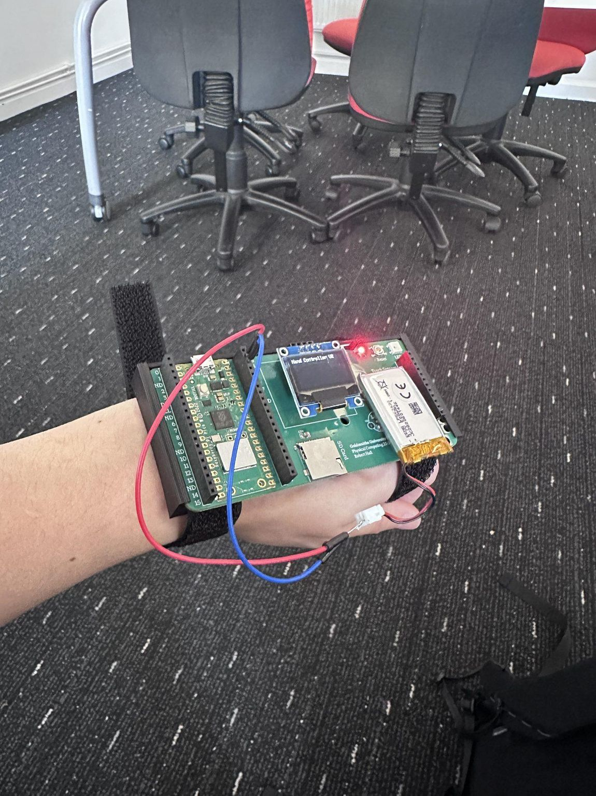
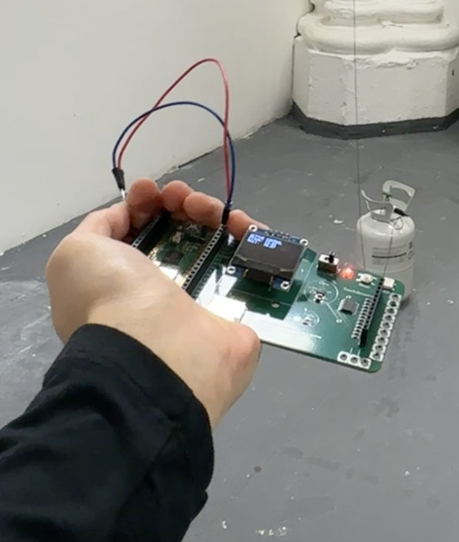
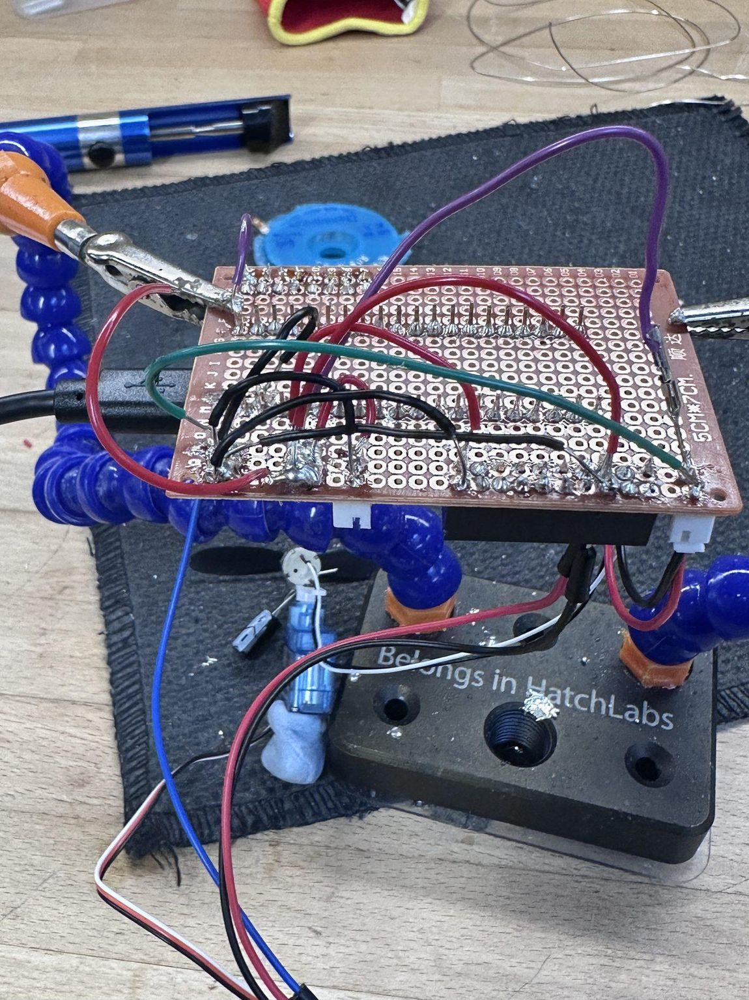
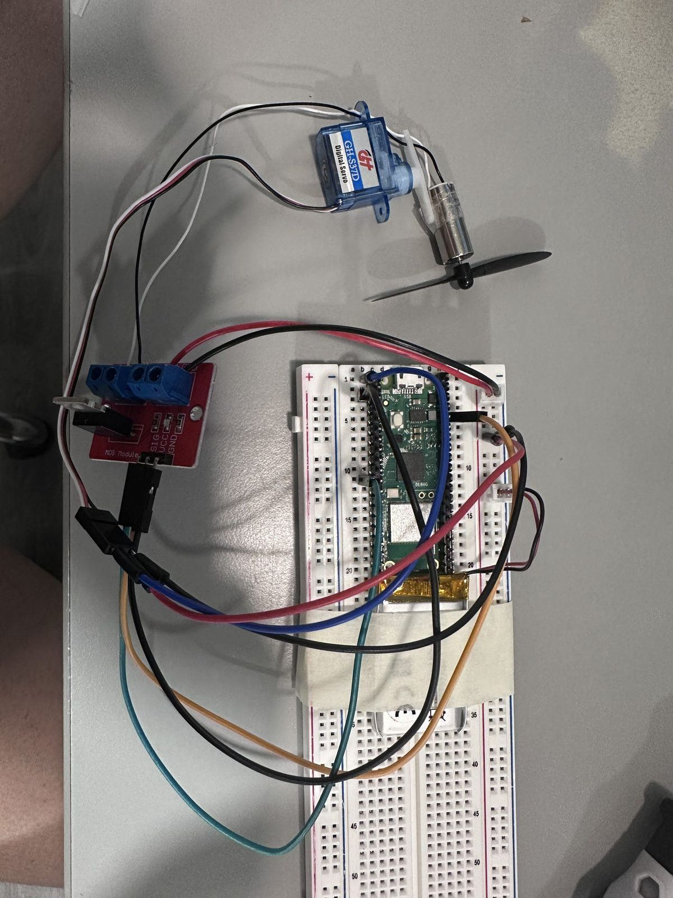
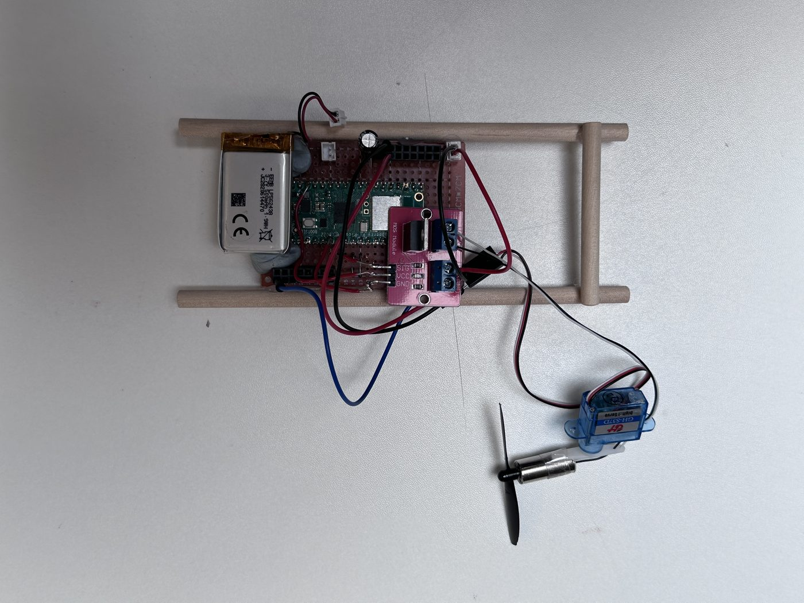
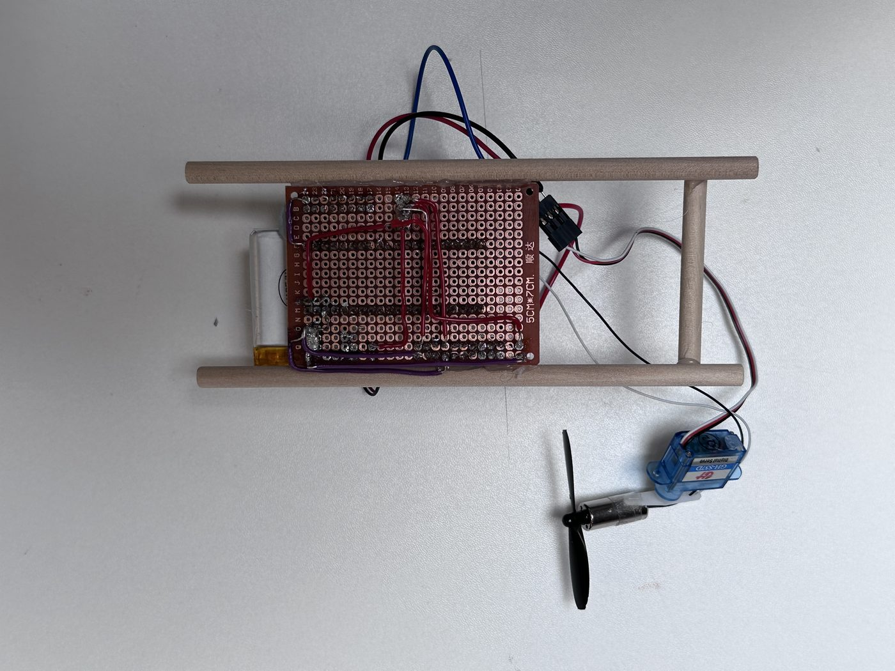
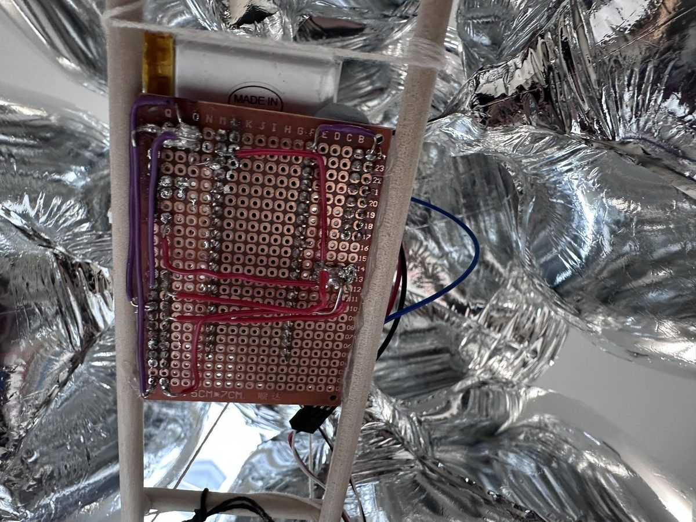
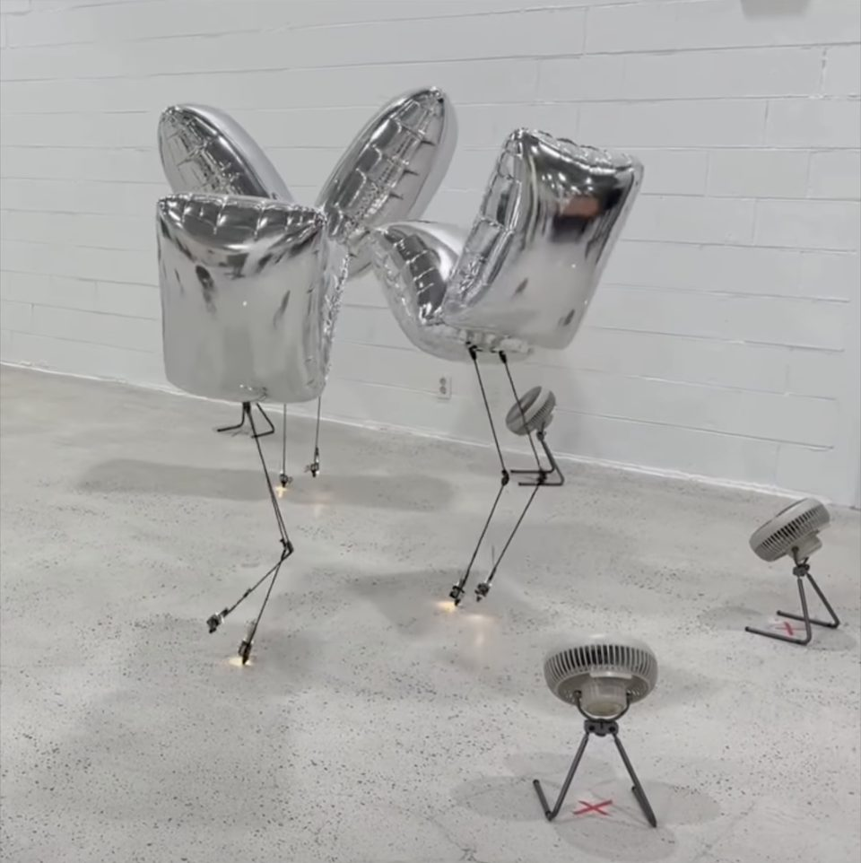
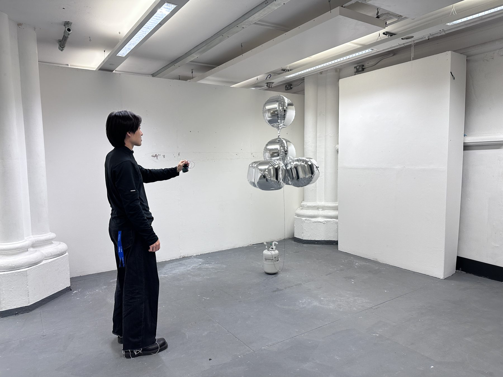

Physical Computing 2 · MA Computational Arts · Goldsmiths · 2026
Gesture-Float
A floating unit steered by the tilt of a hand. No handset, no joystick — a board strapped to the forearm streams hand pitch and roll over Wi-Fi, and a helium balloon answers with a servo and a fan.
video, 2 min · vimeo.com/1176254975
What if the controller stopped being a thing you hold and became something you wear?
The project asks where the boundary between a body and a machine actually sits. A handheld remote keeps that boundary sharp: you operate a device. Move the interface onto the arm and the relationship shifts — the gesture is the command, and the flying unit reads as an extension of the intent rather than a thing being driven.
A balloon turned out to be the right body for this. It is slow, light and slightly unwilling, so the gesture has to be offered rather than issued. Two reference points shaped it: Dennis Hong's work on soft, lightweight mobility, and Buoyancé (Axlab, 2025).
01 — the system
arm to air, over Wi-FiTwo boards, one network, no infrastructure.
Both ends are Raspberry Pi Pico W boards. The flying one hosts its own access point, so the piece carries its network with it and works in a room with no Wi-Fi at all. Messages go by plain UDP rather than a full OSC implementation — with neutral buoyancy this fragile, the cheapest possible protocol was the right one. Less to process, less to power, less delay between a wrist moving and the fan answering.
Two numbers do most of the feel. A one-pole low-pass filter on the incoming angles removes the micro-tremor of a human hand, so the servo swings rather than jitters. Thrust is ramped in small steps instead of jumping, because servo and motor firing together draw enough current to brown out the board.

the controller, worn — no handset in the picture

two boards and a battery, that is the whole of it
Twice soldered, because the first one was planned badly.
On the breadboard the Wi-Fi link worked immediately. The system fell over the moment the motor and servo joined it: one USB connection could not carry that load, and the boards reset under it. Each end got its own 5 V battery, which also made the whole thing genuinely wireless rather than nominally so.
Moving to a soldered board went wrong the first time. I had not planned the routes, so connections were unreliable in a way that was hard to diagnose. I stripped it and re-soldered the whole board, this time laying out every wire run before touching the iron. That second board is the one that flies.
One constraint you cannot engineer away. Helium reacts to the room. Ambient temperature changes the gas density, which changes the lift, which changes everything the tuning assumed. Every session starts by re-checking the balance.

the second board, mid-solder — the one that flew




breadboard → the finished unit → its underside → tied to the balloons
An axis I did not build.
The system was designed to move the balloon horizontally: the servo aims the fan left or right, the balloon drifts across the room. In testing it started climbing. Angling the servo off horizontal splits the thrust, and the vertical component is enough to lift a neutrally buoyant body.
So the piece has a third dimension nobody designed, reachable only by tilting past where the control scheme expected you to stop. It is the most interesting thing in the build, and it arrived by accident — the kind of result you only get from putting the real thing in a real room.

six balloons, tuned to neutral buoyancy

an arm on one side of the room, a body of air on the other
04 — where it stands
a working proof of conceptIt flies, it answers the hand, and it does both untethered. Everything past that is still prototype.
Reading it against the recent work on soft floating robots is useful: gesture control there is usually done with external sensing — cameras or radio tracking watching from outside, sometimes with a human quietly operating off-stage. Here the sensing is first-person and worn. That is a small cell in someone else's taxonomy, and this is one prototype rather than a study, but it is the part worth developing.
- worksuntethered two-board link, smoothed gesture control, stable horizontal flight, and an unplanned vertical axis
- bulkythe arm unit is still prototyping hardware. A custom board would make it wearable rather than strapped on
- powerservo and fan together still spike the current. Better regulation is the next fix
- axisvertical movement is a side effect, not a control. It needs its own mechanism to be usable
- not modularthe build is tuned to this balloon assembly and would need rework for another
- referencesDennis Hong, The Lightness of Submission; Buoyancé (Axlab, 2025)